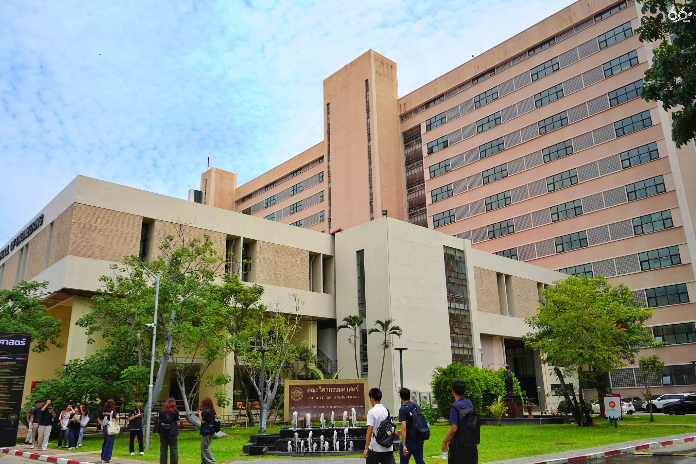

วิศวกรรมระบบไอโอทีและสารสนเทศ
มุ่งพัฒนาบัณฑิตให้มีความรู้ความสามารถด้านเทคโนโลยีอินเทอร์เน็ตในทุกสรรพสิ่ง (IoT) ครอบคลุมทั้งฮาร์ดแวร์ ซอฟต์แวร์ การสื่อสารและเครือข่าย วิทยาการข้อมูล และปัญญาประดิษฐ์
เราบูรณาการองค์ความรู้แบบสหวิทยาการเพื่อออกแบบและสร้างนวัตกรรมดิจิทัล ตอบสนองต่อการเปลี่ยนแปลงเทคโนโลยีของประเทศ สอดคล้องกับแผนพัฒนาเศรษฐกิจและอุตสาหกรรม (S-Curve & EEC) พร้อมส่งเสริมให้นักศึกษาต่อยอดสู่การเป็นสตาร์ทอัพในอนาคต

จุดเด่นของหลักสูตร
เรียน 4 ปี
หลักสูตรเข้มข้น ครบจบภายใน 4 ปี พร้อมเข้าสู่ตลาดแรงงานดิจิทัล
หลักสูตร 2 ปริญญา
วท.บ. ฟิสิกส์อุตสาหกรรม และ วศ.บ. วิศวกรรมระบบไอโอทีและสารสนเทศ
วิชาการอัดแน่น
คณาจารย์ผู้เชี่ยวชาญ พร้อมโครงการเด่นระดับชาติและนานาชาติ

ทำไมต้อง สจล.
ภาควิชาวิศวกรรมไอโอทีและสารสนเทศ สจล. เป็นหลักสูตรที่มุ่งพัฒนาทักษะด้านเทคโนโลยีสมัยใหม่ โดยผสมผสานความรู้ด้าน IoT, ระบบซอฟต์แวร์, เครือข่าย และระบบอัจฉริยะเข้าด้วยกัน
นักศึกษาจะได้เรียนทั้งทฤษฎีและการปฏิบัติจริงผ่านโปรเจกต์ การใช้อุปกรณ์จริง รวมถึงการทำงานเป็นทีมแบบอุตสาหกรรม ด้วยจุดแข็งและคอนเนคชั่นของคณะวิศวกรรมศาสตร์ สจล. ทำให้นักศึกษามีโอกาสพัฒนาทักษะที่ตรงความต้องการตลาดแรงงาน 🚀
นวัตกรรม
คิดค้นและพัฒนาเทคโนโลยีใหม่ๆ เพื่อยกระดับอุตสาหกรรม
ปรัชญา
สร้างเสริมความรู้ ทักษะความเชี่ยวชาญทางด้านวิศวกรรม เพื่อสร้างนวัตกรรมสู่การพัฒนาประเทศ
วิสัยทัศน์
เป็นองค์กรที่พัฒนานวัตกรรมและนำเทคโนโลยีดิจิทัล ส่งเสริมการเรียนการสอน การวิจัย รองรับการเข้าสู่สังคมดิจิทัล
ความเป็นมาของหลักสูตร
ภาควิชาวิศวกรรมไอโอทีและสารสนเทศ เติบโตมาจากภาควิชาเทคนิคอุตสาหกรรม (พ.ศ. 2517) โดยมีวิวัฒนาการในการปรับปรุงหลักสูตรเรื่อยมา เพื่อรองรับการเปลี่ยนแปลงของเทคโนโลยี จากอุตสาหกรรมโทรทัศน์ สู่ระบบคอมพิวเตอร์และโทรคมนาคม และได้เปลี่ยนชื่อเป็น "ภาควิชาวิศวกรรมสารสนเทศ" ในปี พ.ศ. 2544
จวบจนถึงปี พ.ศ. 2564 หลักสูตรได้ปรับโฉมครั้งใหญ่เป็น "วิศวกรรมระบบไอโอทีและสารสนเทศ" เพื่อให้สอดคล้องกับยุทธศาสตร์การทลายกำแพงระหว่างคณะ (Disruptive Curriculum) นำไปสู่ความร่วมมือกับภาควิชาฟิสิกส์ เกิดเป็นหลักสูตรสองปริญญา และเปิดโอกาสให้นักศึกษาได้เรียนรู้อย่างกว้างขวาง ตอบโจทย์โลกแห่งอนาคตอย่างแท้จริง
อาชีพหลังจบการศึกษา
- วิศวกรระบบไอโอที (IoT Engineer)
- วิศวกรซอฟต์แวร์ (Software Engineer)
- วิศวกรระบบสมองกลฝังตัว (Embedded System Engineer)
- นักพัฒนาฟูลสแต็ก (Full Stack Developer)
- นักพัฒนาแอพพลิเคชัน (Application Developer)
- วิศวกรระบบเครือข่าย (Network Engineer)
- วิศวกรระบบคลาวด์ (Cloud Engineer)
- นักวิทยาการข้อมูล (Data Scientist)
- วิศวกรข้อมูล (Data Engineer)
- ผู้ดูแลระบบ (System Administrator)